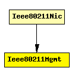

File: NetworkInterfaces/Ieee80211/Mgmt/Ieee80211Mgmt.ned
This is not a concrete module type, but a prototype for all IEEE 802.11 management module types. It exists to specify what gates a management module should have in order to be usable within Ieee80211Nic.
The following diagram shows usage relationships between modules, networks and channels. Unresolved module (and channel) types are missing from the diagram. Click here to see the full picture.
If a module type shows up more than once, that means it has been defined in more than one NED file.
| Ieee80211Nic | This NIC implements an 802.11 network interface card. It can be configured via the mgmtType parameter to act as an AP or a STA, or for ad-hoc mode. |
| Name | Direction | Description |
|---|---|---|
| uppergateIn | input | |
| uppergateOut | output | |
| macIn | input | |
| macOut | output |
simple Ieee80211Mgmt gates: in: uppergateIn; out: uppergateOut; in: macIn; out: macOut; endsimple